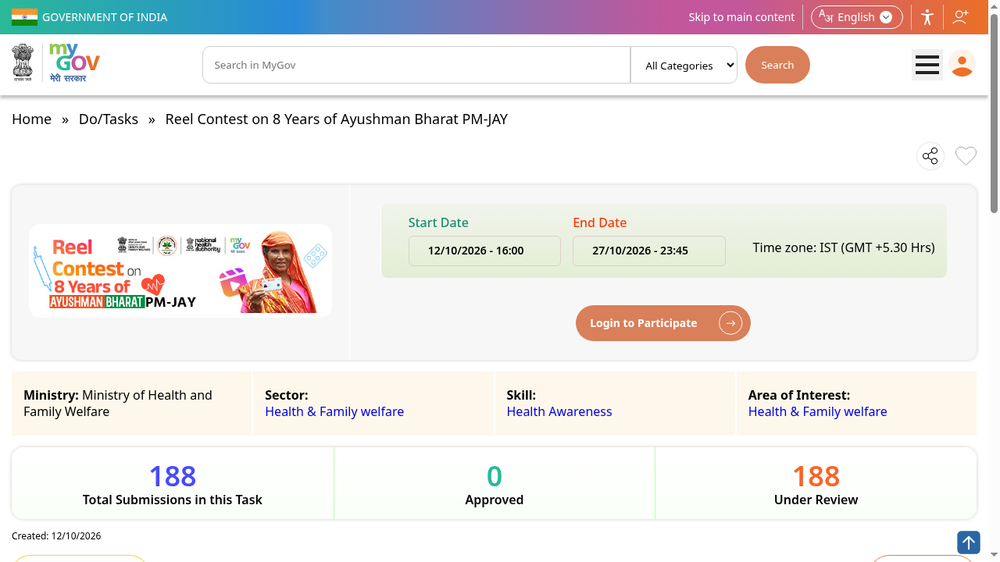

Ayushman Bharat PM-JAY reel contest: best reel wins Rs 50,000, ends 27 October
The National Health Authority (NHA), under the Ministry of Health and Family Welfare, is running a reel contest on MyGov to mark 8 years of Ayushman Bharat PM-JAY. The best reel wins a cash prize of Rs 50,000. Entry is free and open to all Indian citizens. Entries close 27 October 2026, 11:45 PM.

Official publisher artwork hosted by its publisher. Official source. Independent guide, not affiliated or sponsored. Artwork and trademarks belong to their owners.
Prize
- Best Reel: Rs 50,000 cash prize (one winner)
What to make
- A portrait-mode MP4 reel of up to 90 seconds, in any Indian language
- Original content only - no copyright violations, no offensive material
- Pick one of five themes: the 8-year PM-JAY journey; the Ayushman Card; Ayushman Vay Vandana for citizens aged 70+; a beneficiary's story; or your vision of Ayushman Bharat
- Upload the reel and submit the video link on the MyGov task page
Rules to read
- Open to all Indian citizens; one entry per person
- Plagiarised or infringing entries are disqualified; the organiser can amend or cancel the contest, and its decision is final
- Disputes fall under Delhi jurisdiction
- Proof of submission is not proof of receipt
How to enter: step by step
Checked on the live MyGov pages on 19 October 2026.
- Make your reel first: portrait-mode MP4, up to 90 seconds, in any Indian language, on one of the five themes (the 8-year PM-JAY journey; the Ayushman Card; Ayushman Vay Vandana for citizens aged 70+; a beneficiary's story; or your vision of Ayushman Bharat). Original content only.
- Open the official task page: mygov.in/task/reel-contest-8-years-ayushman-bharat-pm-jay. The page shows the end date (27 October 2026, 11:45 PM IST) and a "Login to Participate" button.
- Tap Login to Participate. New to MyGov: register with MyGov Auth or with DigiLocker (MeriPehchaan single sign-on). Already registered: enter your email or mobile number and tap Request OTP.
- Enter the OTP sent to your email/mobile to log in.
- Back on the task page, upload your reel and submit the video link as the page directs. Fill the entry details (name, email, phone number, postal address).
- Submit before 27 October 2026, 11:45 PM IST. One entry per person, and it cannot be withdrawn after submission.


Steps 5-6 happen inside your own login, so they are not shown as screenshots.
Video guides
We searched YouTube on 19 October 2026 for a step-by-step entry video for this contest in English and in Malayalam. We could not verify one that covers this contest and the current MyGov portal, so we are not linking any rather than risk an unrelated video.
We read the contest page and all 16 terms and conditions on 17 October 2026. We did not submit an entry.
Sources: Reel contest page on MyGov, Terms and conditions (PDF). Checked 17 October 2026; entry steps and video search re-checked 19 October 2026. This is an AiCoN explainer, not a government publication.